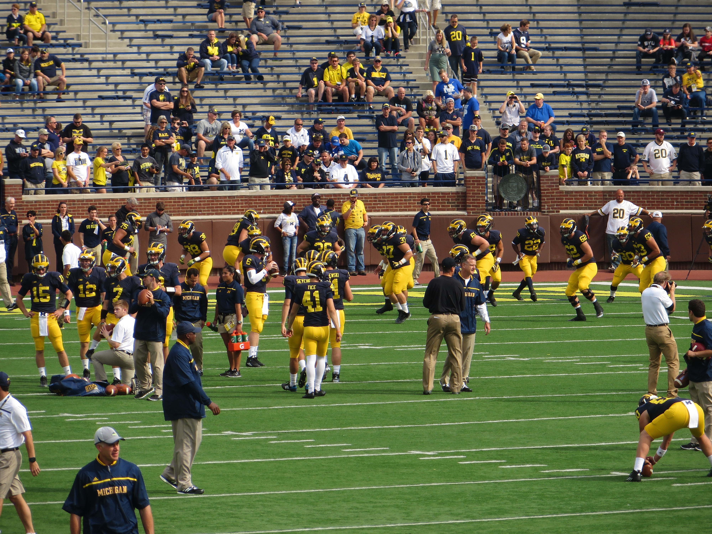

Energy-Efficient Computing
& AI Hardware
Low-power and high-performance processing. Generative AI accelerators.
Connecting industry with Michigan’s circuits research community to explore what comes next—from intelligent computing to integrated microsystems.
Explore membership ↗The Michigan Circuits Research Center is envisioned as a company-membership center associated with the Michigan Integrated Circuits Lab (MICL).
We are developing a place for industry and Michigan faculty to exchange perspectives, explore emerging circuit technologies, and connect with the students creating them.
MCRC is a working name. The center and its membership program are under development; this preview does not represent an approved program or finalized terms.
Five broad areas spanning the circuits and systems that will shape future technology.
Low-power and high-performance processing. Generative AI accelerators.
Emerging memories, memory-centric architectures, and neuromorphic computing.
Data converters, high-speed interfaces, and RF through terahertz circuits.
Miniature connected systems, imaging, and biomedical and environmental sensing.
Circuits and systems for power conversion and energy management.

Photo: Ken Lund / Wikimedia Commons · CC BY-SA 2.0 · Original image unchanged; displayed cropped.
Explore the public University of Michigan profiles of the faculty included in this center concept.
A closer connection to Michigan circuits research.
The proposed membership model is being developed around meaningful exchange between companies, faculty, and students.
Start a conversation ↗An opportunity to help guide Michigan faculty research through industry perspectives and technical dialogue.
Potential early access to research results as new ideas develop.
Potential direct contact with students working at the frontiers of circuits and systems.
Provisional benefits only. Membership terms, access arrangements, and program details have not been finalized.
Planned member resources include student listings and current research projects, with potential access to early results and review-meeting agendas.
The member portal is not connected in this preview. No sign-in or protected content is available here.
A separate secure access service will be selected before member resources are added. No private student or project information is included in this site.
Ask about future access ↗Interested in the center concept or prospective membership? Connect with David Wentzloff through his official Michigan faculty profile.
Contact David Wentzloff ↗.jpg){kind=link}